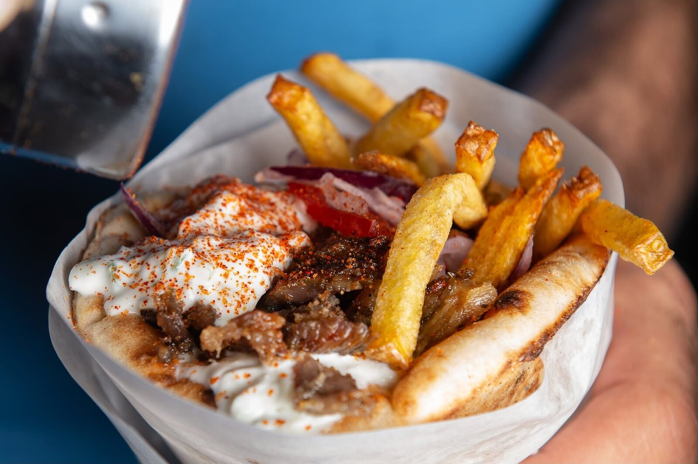
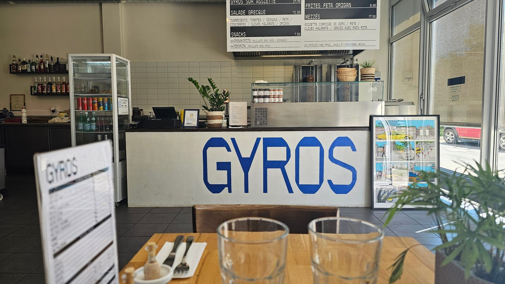
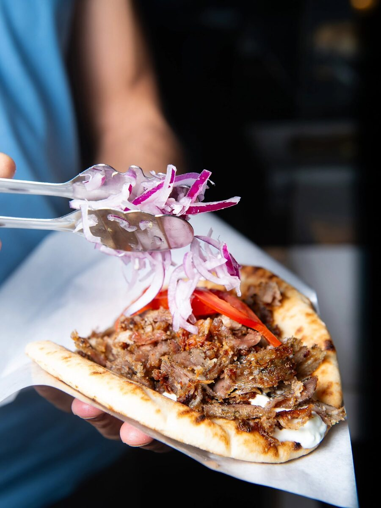
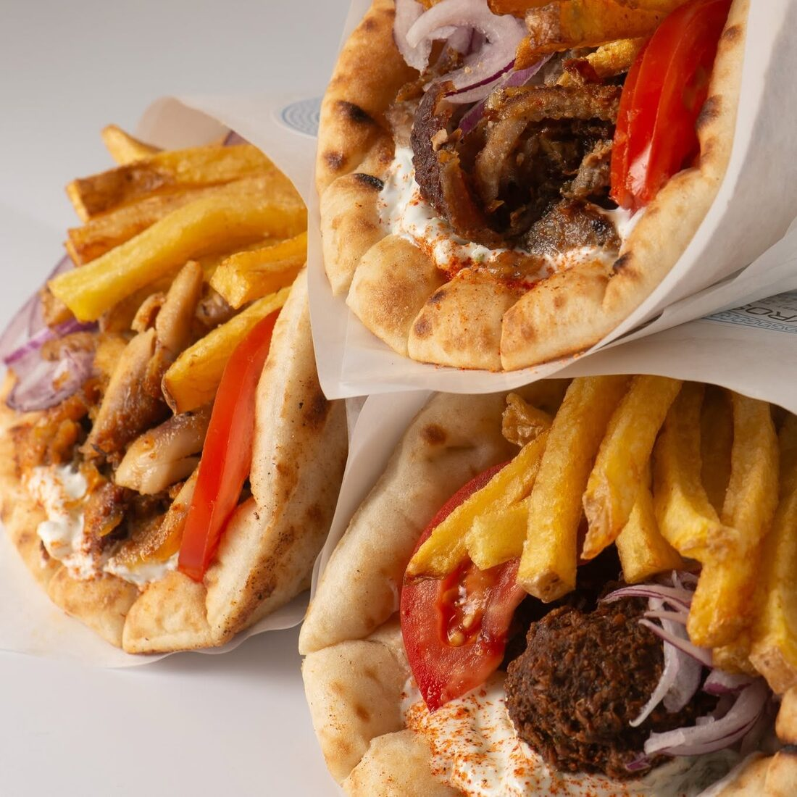
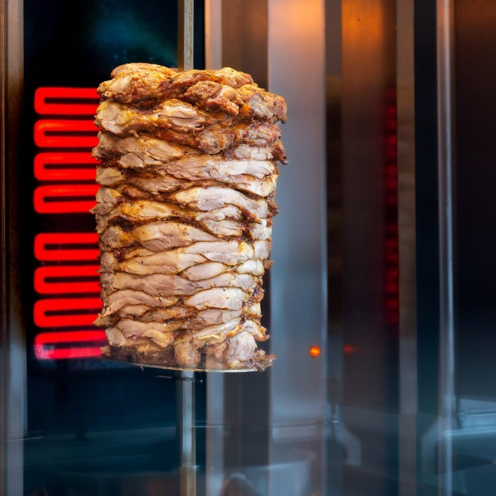
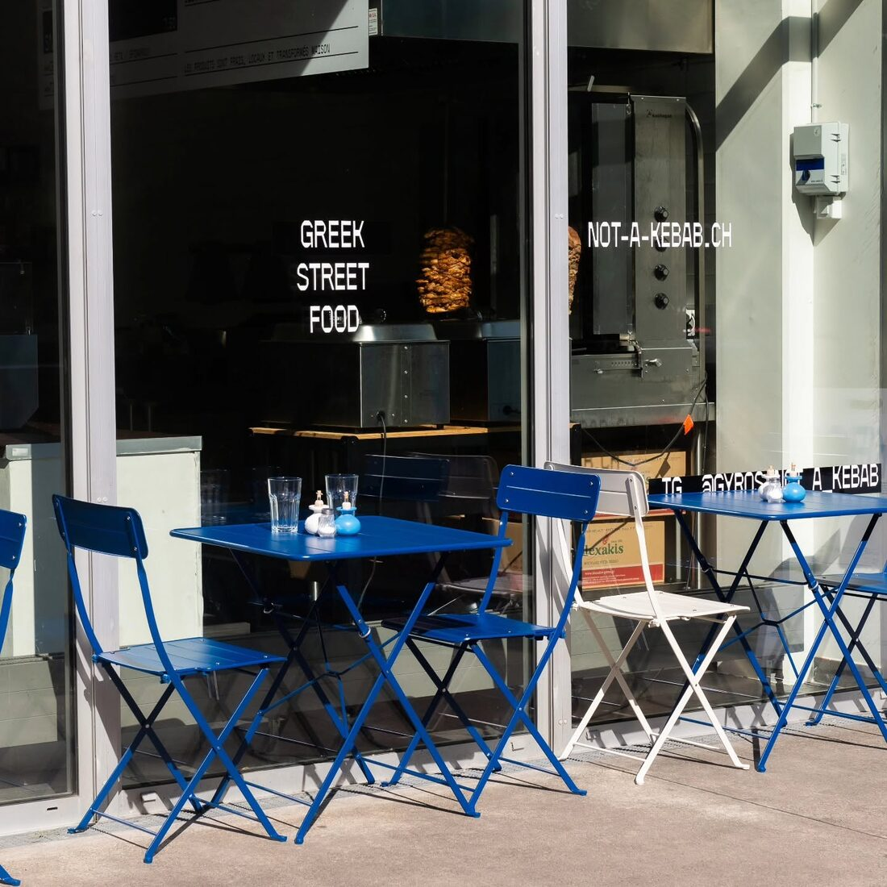
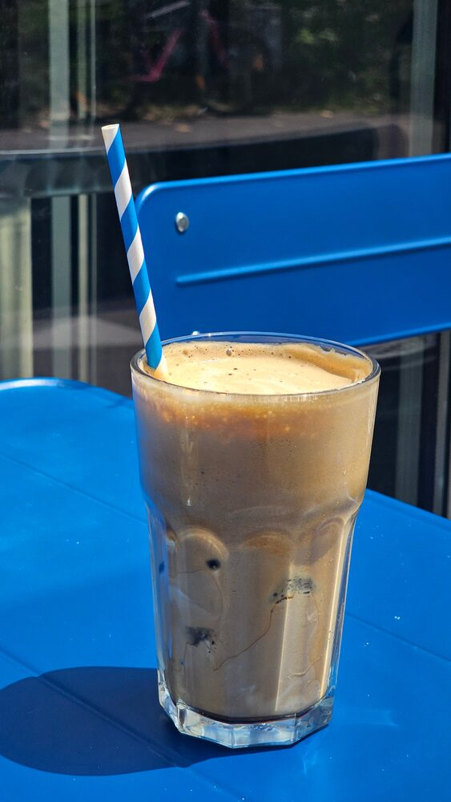
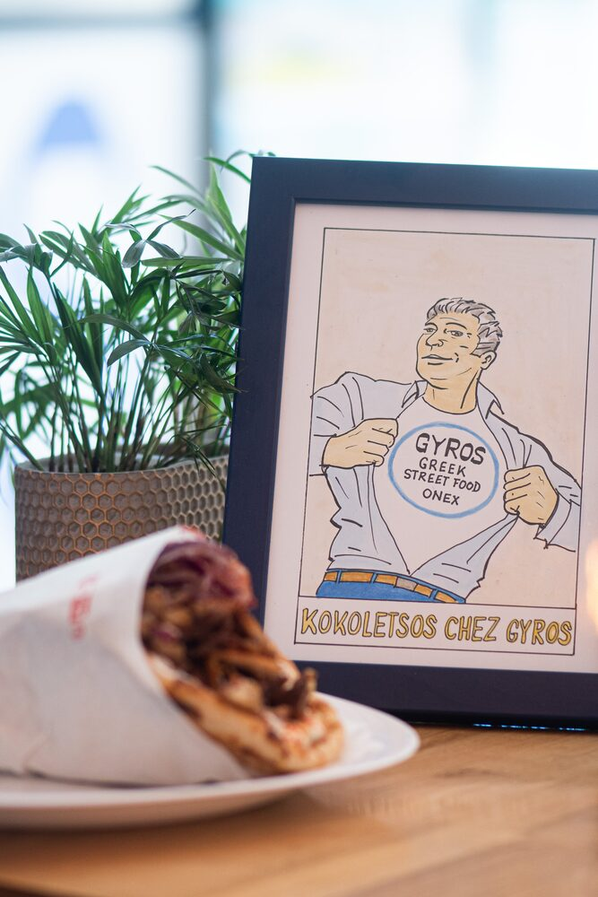
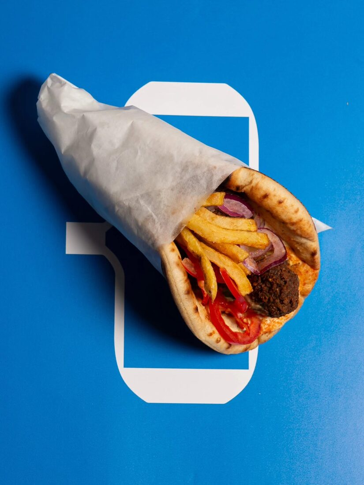
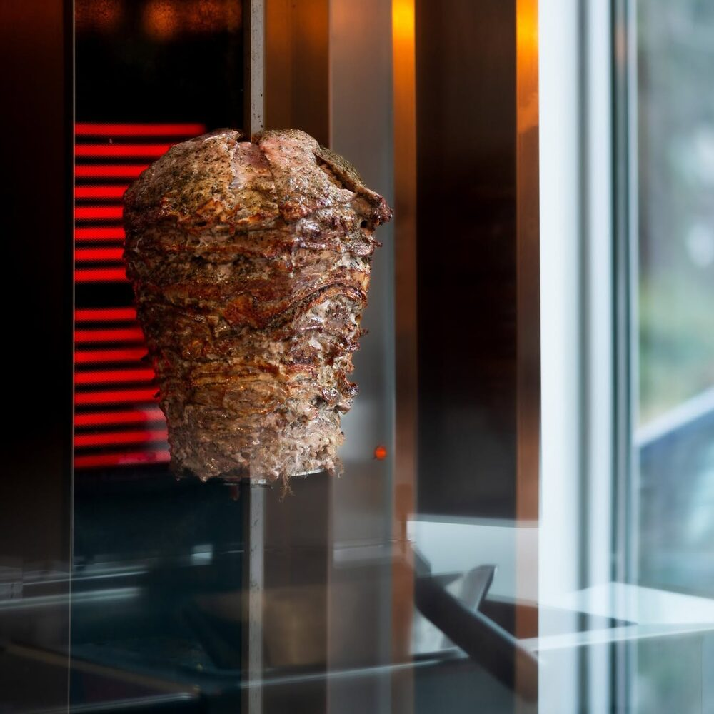

Restaurant grec · Street food Onex · Genève
Le vrai gyros grec,
fait maison à Onex.
Poulet mariné rôti à la broche, pita chaude, tzatziki frais et houmous maison — roulés à la minute. Des produits frais, locaux et transformés maison. Gyros, pas kebab.

La carte
Tout droit sorti de la broche.
Une carte courte et grecque jusqu'au bout : le gyros roulé à la minute, quelques classiques à partager, et ce qu'il faut de douceurs au miel.
Le gyros
À partager
Snacks grecs
Douceurs & café
Commander en ligne
Votre gyros, en deux clics.
Livraison à domicile ou à emporter au comptoir — c'est par ici.
La maison
Une cuisine grecque, à taille humaine.
Au Chemin de l'Echo, à Onex, une petite structure ouverte en 2024 qui ne fait qu'une chose — du vrai gyros grec — et la fait bien.
Tout part de la broche, dans la vitrine : du poulet mariné qui tourne et qu'on tranche à la commande. Autour, l'essentiel est fait maison avec des produits frais et locaux — le tzatziki, le houmous, les feuilletés, le baklava. La salle tient en quelques tables bleu Égée, une broche en vitrine et, au mur, le dessin maison « Kokoletsos chez Gyros ».
Le nom dit le reste : gyros, pas kebab. Un parti pris assumé pour la recette grecque, la pita chaude et la bonne humeur — à emporter, en livraison ou attablé sur la terrasse.
- À emporter
- Livraison
- Sur place
- Terrasse
- Fait maison
- Frais & local

16 avis · Facebook
Excellent. Je recommande vivement. Accueil chaleureux et convivial.
— Sandra C., sur Facebook
Galerie
Le bleu, la broche, le gyros.
Un aperçu de la maison : la broche en vitrine, les tables bleu Égée et le gyros tel qu'on le roule.








Nous trouver
Au Chemin de l'Echo, à Onex.
Horaires
- Lundi11h30–14h · 18h30–22h
- Mardi11h30–14h · 18h30–22h
- Mercredi11h30–14h · 18h30–22h
- Jeudi11h30–14h · 18h30–22h
- Vendredi11h30–14h · 18h30–22h
- SamediFermé
- Dimanche18h30–22h
Les horaires peuvent varier les jours fériés — un appel avant de passer, et c'est réglé.
Contact
Une faim, une question ?
À emporter, en livraison ou sur place — passez nous voir au Chemin de l'Echo, appelez-nous, ou laissez un message ci-contre.